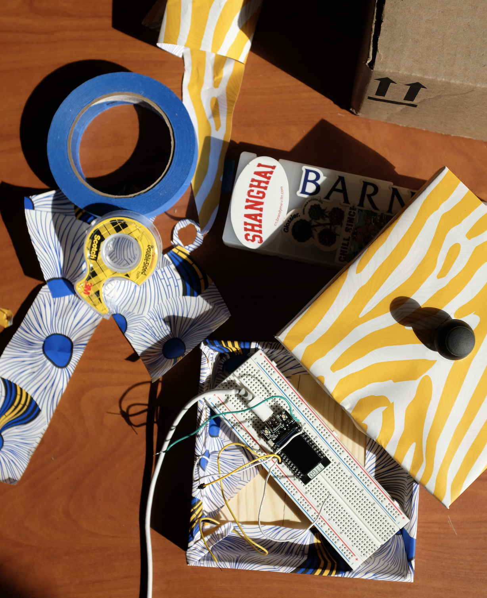
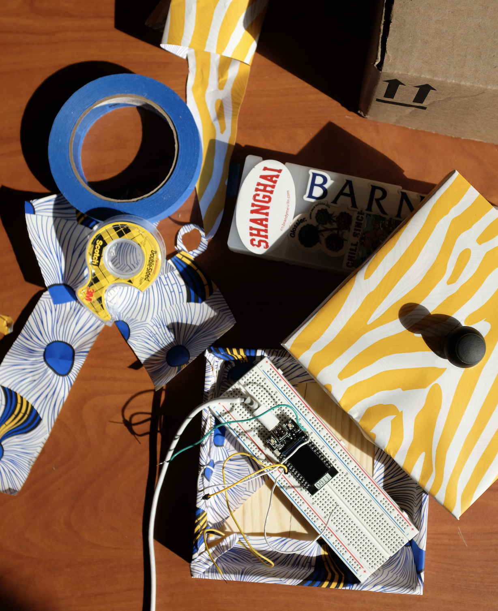

Module 3: Meditate to Your Beat
Basic Overview
For this project, I created a visualisation that moves to the rate of your heart beat.
Materials
- 1 ESP32 TTGO T-display
- 1 Pulse Sensor
- 1 USB-C cord
- Arduino
- Touch Designer
- 3D printer
- PLA 3D filament

Technical Documentation
1. Set up ESP32 and LED on a breadboard according to the schematic diagram below
2. Upload code on Arduino.
- Test on Arduino's serial monitor to see if the values changing accurately as you toggle the joystick.
- If not, it might be an issue with the pins or breadboard. You have to move around and switch pins to find ones that work.

I found a wooden box that would fit the breadboard perfectly if I place it diagonally, which helps stabilize the breadboard.
I knew I wanted to joystick to be outside the box, but have the Joystick pins and wires covered. Wrapping the wrapping paper I got around the Joystick was the hard part. To do this, I measured out the rough size of the joystick circle and cut out a circle for it to fit through.
Afterward, I taped down the joystick and wires to the lid so that I could stabilize them while I wrap paper over it.
 

joystick.ino - Setting up Serial communication with ESP32 pins
- Open the serial port at a set baud rate for serial data transmission.
- Reads X,Y,Z data from the Joystick to Serial Monitor.
- Prints data to the serial port as human-readable ASCII text.
CollageBuilder.pde - Using the data and turning it into a collage
- Setup: create a canvas, load images and background, and open Serial port for receiving data.
- While data is available, read data and convert it into a image's location coordinates as it hovers.
- Set the location of an image when the Z value changes.
- Iterate through all images to form a collage.
1. Open joystick.ino in Arduino and run it on ESP32. Make sure the baud rate is set to match the one specified in the code.
2. Open CollageBuilder.pde in Processing to start the program.
Reflection
I really enjoyed constructing an interactive device and enclosure for this project. Building hardwares something I have never experienced so it was really educational and empowering to learn to read hardware schematics and how it could interact with my creative code. A key challenge for me was figuring out why the Z values from the joystick was not responding, The class discussion chat was helpful in getting suggestions on debugging the solution and in the end it took trial and error to figure out which pins was not compatible.